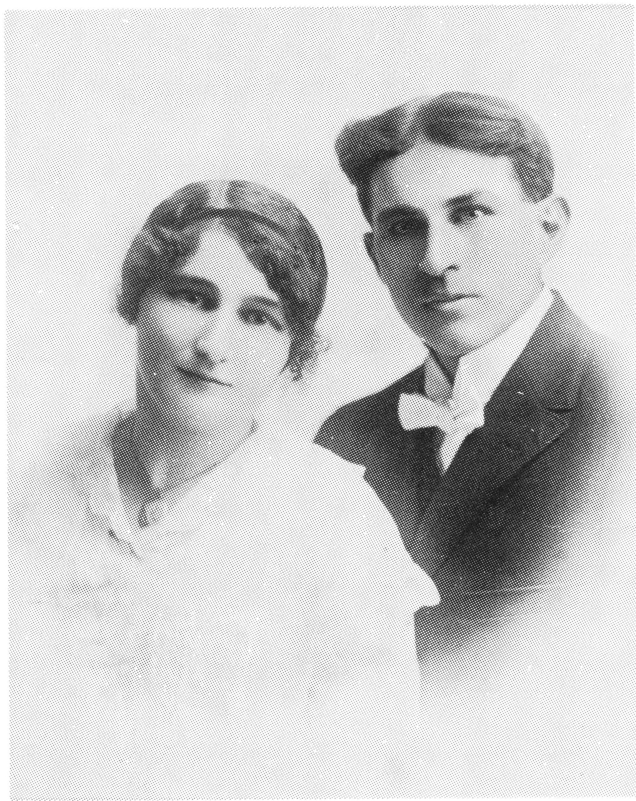

ANTOINETTE (L'HEUREUX) RICHARD
Antoinette came into the world February 18, 1897 in Jackfish Lake, N.W.T. She grew up on her parent's ranch and received her education in a little country school in Jackfish. In her later teens she went to work for her oldest sister, Alma Alain in Delmas, Saskatchewan. While there she met Arthur (Archie) Richard. He was born on October 31, 1886 in Traverse City, Michigan, where he was raised and received his education. His parents moved to Delmas in 1910, where they purchased a farm. Archie soon started working as a Section labourer for the C.N.R., later becoming foreman.

Archie and Antoinette were married on July 25, 1916. They raised nine children, all of whom received most of their education in Delmas; Laurent and Conrad attended College St. Jean in Edmonton, Alberta for a few years.
Archie and Antoinette were both hard workers. He hardly ever missed a day's work on the railroad; regardless of the weather, he was there six days a week, hardly ever taking any holidays. "Tony", as Archie called her, was a very devoted mother and wife; she enjoyed gardening, sewing, and knitting. She was a very good homemaker, and besides caring for her family, she was always ready to help out others in need. She fed many a transient who came to our door in the 1930's, many of whom rode the box cars, in search of work.
Archie loved sports, being interested in baseball and hockey. He loved to whistle and was a good skater in his younger years. Both of them loved music. Their daughter, Bernadette, started taking piano lessons at age 12, then five of the other children in the family took lessons from her. Mother must have had to be very patient to listen to all that practising! There were many happy times through the years.
What a scene when Dad got our first car, and again when we got our first radio. Dad's favourite programs were "Hockey Night in Canada" and "The Major Bowes Show". Getting electricity later on was a dream come true. We had many enjoyable sing songs in our youth, along with Duets, etc. Our home, though not large, was often a gathering place for young folks.
Antoinette was a member of the Ladies of Ste. Anne, and Archie belonged to the Knights of Columbus. He retired from the railroad in July, 1950, after being Foreman there for 43 years. They moved to St. Paul, Alberta, enjoying their retirement for several years. The saddest time in our lives, was when Lorraine passed away on April 23, 1960 at the age of 29, after giving bith to their daughter, Renee. She was sadly missed by all. Archie passed away May 7, 1965, and Antoinette on Jauary 25, 1973.
We all have fond memories of Mom and Dad, who were a great inspiration to all the family.
Antoinette L'Heureux Richard
| NAME | BORN | MARRIED | SPOUSE | BOY | GIRL | DIED |
|---|---|---|---|---|---|---|
| Antoinette | Feb. 18, 1897 | July 25, 1916 | Arthur Richard | 6 | 3 | Jan. 25, 1973 |
| Arthur | May 7, 1965 | |||||
| ANTOINETTE'S FAMILY | ||||||
| Laurent | May 8, 1917 | Nov. 4, 1953 | Cecile Berlinguette | 3 | 2 | |
| Bernadette | Dec. 31, 1918 | July 3, 1947 | Eugene Foisy | 4 | 1 | |
| Bernard | May 20, 1920 | Oct. 21, 1944 | Grace Chales | 2 | 2 | |
| Hubert | Sept. 17, 1923 | |||||
| Robert | Mar. 15, 1925 | July 31, 1954 | Helen Nielsen | 4 | 1 | |
| Clarence | May 13, 1928 | Sept. 25, 1952 | Moza Leroux | 0 | 3 | |
| Lorraine | Feb.7, 1931 | Sept. , 1958 | James Whalen | 0 | 1 | Apr. 23, 1960 |
| Conrad | Feb. 12, 1933 | Aug. 30, 1958 | Suzanne Plante | 5 | 1 | |
| Gabrielle | Jan. 15, 1936 | Nov. 28, 1959 | Donald Hedman | 1 | 2 | |
| Antoinette's Grandchildren | ||||||
| LAURENT'S FAMILY | ||||||
| Diane | Aug. 13, 1954 | 1 | 0 | |||
| Jean | Mar. 6, 1956 | Aug. 7, 1979 | ||||
| Albert | May 22, 1957 | Apr. 12, 1980 | Dallas Kreway | 1 | 0 | |
| Maurice | July 22, 1959 | Dec. 29, 1982 | Janelle Smith | 1 | 1 | |
| Renee | Nov. 30, 1963 | |||||
| Antoinette's Great Grandchildren | ||||||
| Laurent's Grandchildren | ||||||
| DIANE'S FAMILY | ||||||
| Daniel | Apr. 18, 1978 | |||||
| ALBERT'S FAMILY | ||||||
| Kurt | Apr. 16, 1985 | |||||
| MAURICE'S FAMILY | ||||||
| Dorielle | June 4, 1983 | |||||
| Alec | Aug. 20, 1984 | |||||
| Antoinette's Grandchildren | ||||||
| BERNADETTE'S FAMILY | ||||||
| Paulette | July 11, 1950 | May 2, 1970 | Ted Graham | 1 | 1 | |
| Gerald | Mar. 10, 1953 | |||||
| Richard | Nov. 2, 1954 | Oct. 20, 1978 | Noreen Rewerts | |||
| Blair | Dec. 11, 1960 | |||||
| Reynald | Mar. 25, 1962 | |||||
| Antoinette's Great Grandchildren | ||||||
| Bernadette's Grandchildren | ||||||
| PAULETTE'S FAMILY | ||||||
| Carlie | Feb. 22, 1977 | |||||
| Shane | Sept. 5, 1979 | |||||
| Antoinette's Grandchildren | ||||||
| BERNARD'S FAMILY | ||||||
| Robert | May 2, 1946 | July 7, 1984 | Reine Bernadin | |||
| Roland | Dec. 12, 1947 | June 12, 1976 | Flika Schoberg | 1 | ||
| Lizette | Apr. 30, 1953 | 1 | ||||
| Nicole | June 21, 1960 | |||||
| Antoinette's Great Grandchildren | ||||||
| Bernard's Grandchildren | ||||||
| RONALD'S FAMILY | ||||||
| Chad | July 24, 1985 | |||||
| LIZETTE'S FAMILY | ||||||
| Elysse | Oct. 6, 1985 | |||||
| Antoinette's Grandchildren | ||||||
| ROBERT'S FAMILY | ||||||
| Neil | Aug. 19, 1955 | |||||
| Camille | Aug. 22, 1958 | Sept. 1, 1978 | Ralph Nybaaken | 2 | 0 | |
| Brice | Apr. 22, 1962 | |||||
| Denis | Sept. 29, 1963 | |||||
| Warren | May 16, 1968 | |||||
| Antoinette's Great Grandchildren | ||||||
| Robert's Grandchildren | ||||||
| CAMILLE'S FAMILY | ||||||
| Patrick | Oct. 7, 1982 | |||||
| Mark | Dec. 12, 1984 | |||||
| Antoinette's Grandchildren | ||||||
| CLARENCE'S FAMILY | ||||||
| Michelle | Apr. 7, 1954 | |||||
| Colette | Aug. 15, 1963 | |||||
| Simone | Aug. 7, 1966 | |||||
| LORRAINE'S FAMILY | ||||||
| Renee | Feb. 21, 1960 | |||||
| Adopted by Lorraine's sister, Gabrielle & Don Hedman | ||||||
| CONRAD'S FAMILY | ||||||
| Miguel | Sept. 24, 1959 | Nov. 22, 1977 | ||||
| Rocque | June 5, 1961 | July 6, 1985 | Lynnette Landry | |||
| Jacqueline | May 21, 1962 | May 23, 1981 | Ron Mercier | 1 | 1 | |
| Marc | Sept. 21, 1963 | |||||
| Alain | Dec. 17, 1964 | |||||
| Arthur | Aug. 17, 1967 | |||||
| Antoinette's Great Grandchildren | ||||||
| Conrad's Grandchildren | ||||||
| JACQUELINE'S FAMILY | ||||||
| Maxine | Sept. 23, 1981 | |||||
| Gerald | Nov. 11, 1982 | |||||
| Antoinette's Grandchildren | ||||||
| GABRIELLE'S FAMILY | ||||||
| Lorraine | Aug. 15, 1961 | Terry Karas | 2 | 0 | ||
| Ellen | Apr. 20, 1963 | Eric Wells | 2 | 0 | ||
| Nels | Nov. 3, 1965 | |||||
| Antoinette's Great Grandchildren | ||||||
| Gabrielle's Grandchildren | ||||||
| LORRAINE'S FAMILY | ||||||
| Joshua | June 17, 1982 | |||||
| Michael | Oct. 7, 1985 | |||||
| ELLEN'S FAMILY | ||||||
| Kyle | Apr. 14, 1984 | |||||
| Eric | June 12, 1986 | |||||
| TOTAL DESCENDANTS | 78 |
| LIVING | 73 |
| DECEASED | 5 |